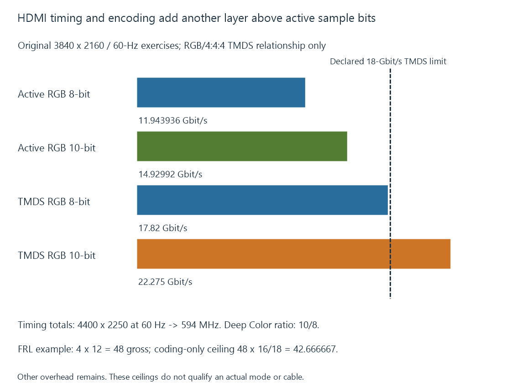

HDMI link bandwidth: TMDS and FRL
HDMI link bandwidth depends on the selected timing, sample format and TMDS or FRL transport arrangement rather than on the movie’s compressed bitrate.
A movie’s compressed bitrate is not the bandwidth of its display connection. Once the client has decoded and prepared pictures, the output link must transport a defined presentation mode.
For HDMI, TMDS and FRL use different transport arrangements. Resolution, refresh, sample precision and chroma all contribute to the requested work.
Start with active picture samples
An original uncompressed RGB model has three components per pixel. Its active sample rate is:
width × height × refresh × 3 × component bits
At 3840 × 2160, sixty Hz and eight bits per component, this gives 11.943936 Gbit/s. Ten-bit components at the same active geometry give 14.929920 Gbit/s.
Doubling the refresh to 120 Hz doubles those active rates. A 4K120 ten-bit RGB model consequently has 29.859840 Gbit/s of active samples.
These values omit timing and transport overhead. They are a starting point, not the cable rate required by a qualified HDMI mode.

TMDS adds timing and coding relationships
Traditional TMDS uses three data channels and a separate clock relationship. In the basic eight-bit-per-component RGB exercise, each data channel transmits ten-bit symbols.
Use an original declared sixty-Hz timing with totals of 4400 × 2250:
Pixel clock = 4400 × 2250 × 60 = 594,000,000 Hz
Eight-bit RGB TMDS data rate = 594,000,000 × 3 × 10
= 17.82 Gbit/s
The active picture remains 3840 × 2160, but the timing totals include intervals beyond its active samples. That is why the active 11.943936-Gbit/s calculation does not equal the TMDS wire rate.
For the same declared RGB/4:4:4 timing, a ten-bit Deep Color exercise scales the data rate by 10/8:
17.82 × 10/8 = 22.275 Gbit/s
That exceeds a declared 18-Gbit/s TMDS route even though the eight-bit exercise fits below it.
YCbCr 4:2:2 has its own packing rules. Its requested transport rate should not be derived by blindly applying this RGB Deep Color formula.
FRL has another link organization
Fixed Rate Link packetizes the presentation over an implemented lane/rate configuration. AMD’s HDMI transmitter documentation distinguishes its FRL path, including forward-error-correction parity and 16b/18b coding, from its TMDS path.
For an original four-lane, twelve-Gbit/s-per-lane exercise:
Gross rate = 4 × 12 = 48 Gbit/s
Coding-only ceiling = 48 × 16/18 = 42.666667 Gbit/s
The second value removes only that coding expansion. It is not a claim of 42.666667 Gbit/s of usable active picture payload: packet/control and error-correction relationships still need accounting.
HDMI LA’s current HDMI 2.2 overview specifies an upper bandwidth of 96 Gbit/s. That specification maximum does not establish the lane/rate implementation of every source, receiver or display input.
A source and sink use a supported actual configuration. A higher edition number is not a replacement for its feature and mode declarations.
Chroma and link compression change the request
Reducing chroma sampling can lower the amount of color-detail information carried by a picture. It changes the representation; it is not simply another cable with the same picture data.
Chroma subsampling describes that spatial relationship. HDMI packing and mode rules determine how the selected format is transported.
DSC compresses the display-link representation under a supported arrangement. It is separate from the movie’s HEVC/AV1 compression. Both endpoints and any intermediate path must accept the required DSC configuration.
Using a compressed or subsampled mode can consequently make a requested output feasible under a different bandwidth condition, while retaining its own format and interoperability constraints.
Establish feasibility for the whole route
First identify the exact output: active dimensions, refresh, timing, sample format, precision and whether DSC is used.
Then establish the actual transmitter, input/output ports, intermediate devices and cable capability. A receiver can accept one signal and expose another link constraint toward the TV.
Finally, distinguish an advertised mode from successful active operation. Link establishment, format interpretation and sustained transport still need to succeed.
A movie playing at thirty Mbit/s over the network can ask for the same HDMI mode as another playing at ten Mbit/s. If both are presented through the same desktop mode, their display-link request can be identical.
See Also
- HDMI video transport
- HDMI cable categories
- Display Stream Compression (DSC)
- Chroma Subsampling
- Video Bit Depth